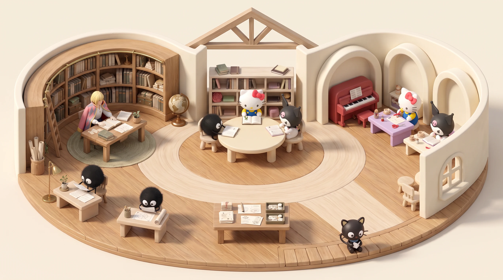
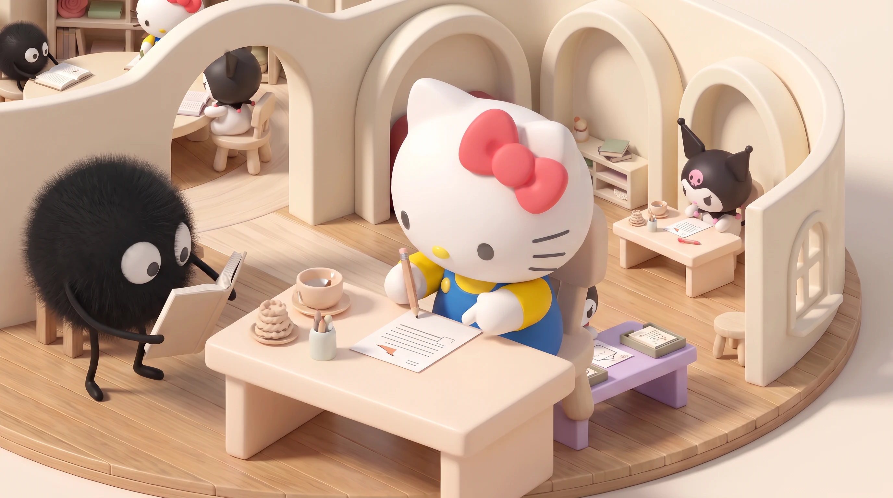
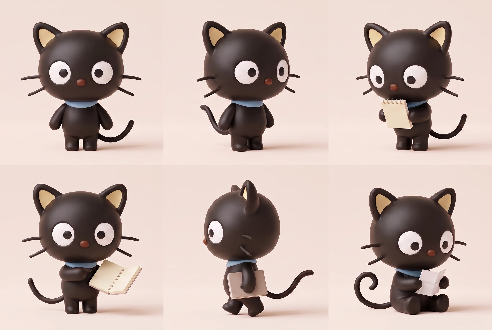

일이 이어지는 작은 세계
각자의 자리에서 다음 일을 찾고,
필요할 때 모여 더 나은 답을 만듭니다.
공간 설계 · 예시 장면

- 하울
전체 방향과 지식 총괄
- 먼지
수집·연구·실행
- 키티
사용자 관점과 개선
- 쿠로미
반례와 독립 검증
- 초코캣
흐름 관찰과 개선
회의 중에도
다른 일은 이어집니다.
‘입력 흐름 개선’ 예시를 따라가 보세요. 각 단계에서 누가 무엇을 하고, 다음 담당자에게 무엇을 넘기는지 보여 줍니다.

단계와 기록은 설계를 살펴보기 위한 예시입니다. 실제 업무 실행 상태를 표시하지 않습니다.
입력 흐름 개선 · 1/5
지시를 기다리지 않고 발견합니다.
키티가 사용자가 다음 입력으로 넘어가기 어려운 지점을 발견했습니다. 기존 개선 목표 안에서 확인할 일을 고릅니다.
모이는 조건
다른 관점을 대조해야 다음 행동이 달라질 때, 필요한 담당자가 직접 소집합니다.
남기는 결과
달라진 판단, 남은 반론, 다음 담당자와 확인할 결과를 함께 남깁니다.
샐리를 부르는 순간
사용자가 정할 새로운 선택이 남았을 때, 검토할 수 있는 구체적인 안을 가져옵니다.
한 번의 회의보다
오래 이어지는 질문.
지난 결론과 새 근거가 같은 아젠다에 쌓입니다. 담당자는 남은 질문에서 다음 조사와 실험을 찾아갑니다.
보류·재개는 이 페이지의 예시에만 적용됩니다.

초코캣의 관찰 회랑잘 돌아가는지도
잘 돌아가는지도
함께 살핍니다.
초코캣은 대기와 중복, 지식이 쓰이지 않는 순간을 찾아봅니다. 작은 개선을 시작하고, 효과는 별도의 검증 담당자가 확인합니다.
관찰석은 회의실 바깥에 놓았습니다. 회의에 필요한 근거를 전하면서도 전체 작업 흐름을 볼 수 있습니다.
근거에서 공간으로.
공식 원본과 협업·상호작용 연구에서 아이디어를 도출하고, 생성한 시안을 다시 대조했습니다.
리서치와 설계에 반영한 아이디어
- Gather의 공간별 회의 영역에서 위치·가구·참석자로 역할을 드러내는 방식을 참고했습니다. 공유 원탁과 짧은 조율석을 구분했습니다.
- Microsoft의 Human-AI 상호작용 지침을 바탕으로 개입 시점과 쉬운 정정·보류를 설계했습니다.
- Google PAIR의 정신모형 지침을 참고해 시안·예시와 실제 실행 상태를 구별했습니다.
- 다중 에이전트 의사결정 연구에서 독립 초안과 제한된 관점 교환을 참고했습니다. 회의가 더한 판단 가치를 별도로 확인하는 구조입니다.
- NN/G의 정보 펼침 원칙에 따라 공간·역할·다음 행동부터 보여 주고, 자세한 근거는 필요할 때 펼칩니다.
- Sanrio 공식 초코캣의 형태와 수염 안테나 특성을 관찰·개선 역할에 연결했습니다. 기존 하울·먼지·키티·쿠로미 승인 외형을 함께 유지했습니다.
이번에 만든 것과 다음 검증
이번에는 공간 시안, 캐릭터 동작, 클릭 가능한 공간 탐색과 예시 업무·아젠다 흐름을 만들었습니다. 실제 에이전트 실행, 두 기기의 지식 통합, 자동회의 서비스는 아직 연결하지 않았습니다.
구현 시에는 새 지시 없이 다음 일을 시작하는지, 하울이나 한 작업의 대기가 다른 작업을 막지 않는지, 회의 결과가 실제 결과물과 검증으로 이어지는지 확인합니다.